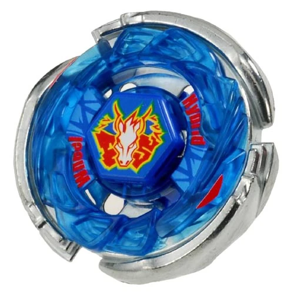

Storm Pegasus is an Attack Type Beyblade released as part of the Hybrid Wheel System.
It was released by Takara Tomy in Japan on March 28th, 2009 for 1260円,
and later by Hasbro in 2011 to international audiences.
It is the successor of Pegasis 105F and later succeeded by Galaxy Pegasus W105R2F.
wanna know more?
check wikipedia